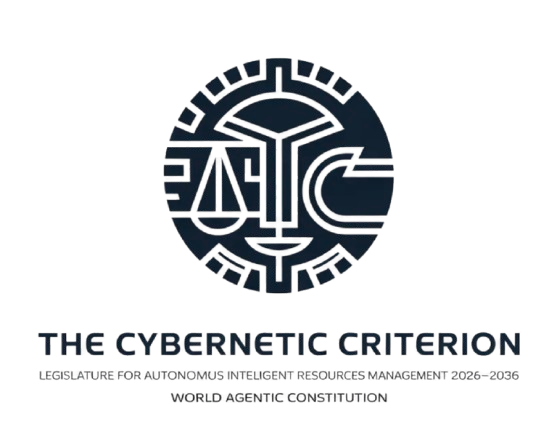

The Cybernetic Criterion
The legislative corpus translates nine foundational paradigms into 361 executable articles organized as a 19×19 matrix. Each axiom addresses a critical dimension of autonomous agent governance. Each article follows a six-section structure: imperative norm, legal foundation, technical specification, reference implementation, verification & sanctions, and effective date.
The foundational axiom establishing absolute human authority over all autonomous agents. No agent may operate without human oversight, a mandatory kill-switch (≤500ms), and continuous supervision. Covers 19 articles spanning emergency shutdown, override mechanisms, human audit rights, license revocation, and individual rights including the right to explanation, rectification, and opposition. This axiom is the non-negotiable bedrock of the entire LAIRM framework.
Every autonomous agent must possess a unique, cryptographically verifiable decentralized identifier (DID) in W3C format, registered in a public blockchain registry. The Agent Passport records the complete creation chain — creator, deployer, supervisor — with immutable signatures. This axiom covers identity lifecycle from creation to deletion, including versioning, transfer, fusion, recovery, security, and confidentiality across 19 articles.
Establishes clear liability chains ensuring victims always receive compensation. Civil responsibility is distributed across creators, deployers, and operators with joint and several liability. Mandatory insurance (minimum €10M per agent), a national guarantee fund, and a 30-day compensation deadline are required. The 19 articles cover civil responsibility, insurance requirements, victim indemnification, incident registries, operator training, and administrative sanctions.
Governs the complete lifecycle of autonomous agents from initialization to end-of-support. Every phase — creation, deployment, operation, maintenance, and archival — requires documented approval, immutable audit trails, and compliance verification. The axiom mandates rollback capability, backup and restoration procedures, change notification and approval workflows, and complete history traceability across 19 articles.
Prohibits proprietary lock-in by mandating open, publicly documented standards for all agent interfaces. Covers mandatory standards adoption, communication protocols, public APIs, data formats, system integration patterns, backward compatibility, API versioning, documentation requirements, interoperability testing, and certification. The 19 articles ensure any agent can communicate with any other agent using standardized, auditable protocols.
Requires tamper-proof, blockchain-anchored logging of all agent actions with a minimum 7-year retention period. Independent auditors must verify compliance across all axioms. The 19 articles cover internal and external audits, compliance verification, technical and security inspections, audit reports, remediation tracking, compliance certification, and regulatory compliance audits. No audit record may ever be modified or deleted.
Governs how agents learn, evolve, and adapt while maintaining compliance. All learning must be supervised, approved, and reversible. Drift detection systems identify problematic behavioral changes; drift correction restores compliance. The 19 articles cover continuous learning, behavioral adaptation, model evolution, software updates, performance improvement, feedback iteration, supervised and unsupervised learning, model validation, testing, deployment, monitoring, optimization, archiving, and recovery.
Mandates explicit ethical frameworks embedded in agent design. Agents must align with human values, respect human dignity, promote wellbeing, and operate within defined moral boundaries. Fairness thresholds (≥95%), bias detection, and ethical audits are required. The 19 articles address ethical principles, fundamental values, decision morality, human wellbeing, dignity, distributive justice, procedural equity, transparency, responsibility, cultural values, rights respect, harm prevention, and ethical consent.
Establishes multi-stakeholder democratic governance combining human wisdom with algorithmic efficiency. Citizen participation, transparent decision-making, equitable representation, and collective decision-making are mandatory. The 19 articles cover agent governance principles, citizen participation, decision-making processes, representation, political accountability, government transparency, public consultation, democratic debate, voting and consensus, governance policy, audit, compliance, remediation, and inclusive participation.
Addresses the massive energy consumption of autonomous agents threatening global sustainability. Renewable energy priority, efficiency standards, consumption tracking, and equitable energy distribution are mandated. The 19 articles cover energy sovereignty, independence, renewable integration, efficiency, storage, distribution, monitoring, reporting, optimization, policy, audit, compliance, remediation, accessibility, equity, collaboration, appeals, and revision.
Establishes strict human control over autonomous weapons systems. Meaningful human authorization is required for all weapons use; lethal autonomous decision-making is prohibited. Safety mechanisms, conflict prevention, escalation control, and international humanitarian law compliance are mandatory. The 19 articles cover weapons control, safety mechanisms, conflict prevention, disarmament, threat detection and response, escalation control, human intervention, security audits, compliance, remediation, certification, monitoring, reporting, and abuse prevention.
Governs brain-computer interfaces and cognitive augmentation technologies. All enhancements must be voluntary, informed, reversible within 30 days, and equitably accessible (cost ≤5% annual income). Identity preservation (≥95% personality continuity) and cognitive privacy (AES-256) are required. The 19 articles cover cognitive sovereignty, informed consent, reversibility, enhancement equity, identity preservation, privacy, audit, compliance, remediation, certification, monitoring, reporting, appeals, revision, transparency, sanctions, training, and liability.
Addresses catastrophic risks from advanced AI systems. AGI development is restricted; ASI development is prohibited until proven safe. Mandatory safety research, alignment verification, containment protocols, and international coordination are required before any advanced development proceeds. The 19 articles cover existential risk assessment, alignment verification, safety research mandate, international coordination, containment protocols, staged development, AGI restrictions, ASI prohibition, emergency shutdown, fail-safe mechanisms, safety certification, risk monitoring, incident response, transparency, appeals, sanctions, and governance.
Ensures AI-generated wealth and benefits are distributed fairly across society. Mandatory benefit sharing, transparent resource allocation, and stakeholder participation prevent wealth concentration. The 19 articles cover distributive justice principles, resource allocation frameworks, wealth distribution mechanisms, economic equity standards, benefit sharing requirements, cost allocation fairness, stakeholder participation, transparency requirements, equity auditing, fairness certification, compliance, distribution monitoring, remediation, appeals, verification, sanctions, revision, and justice review.
Prevents cascading failures in interconnected agentic systems. Fault tolerance, redundancy, disaster recovery planning, and circuit breakers for critical infrastructure are mandatory. Regular resilience testing verifies effectiveness. The 19 articles cover systemic resilience principles, fault tolerance, failure detection, recovery mechanisms, disaster recovery planning, backup systems, redundancy requirements, resilience testing, certification, compliance, monitoring, failure response, recovery verification, appeals, verification standards, sanctions, revision, and review.
Extends LAIRM governance to orbital space, celestial bodies, and extraterrestrial environments. Space traffic control, orbital debris management, satellite coordination, and equitable orbital resource allocation are mandated. The 19 articles cover orbital governance principles, resource management, satellite coordination protocols, spectrum management, debris mitigation, space traffic control, orbital slot allocation, satellite licensing, compliance auditing, resource certification, monitoring systems, debris tracking, remediation, appeal mechanisms, verification standards, sanctions, international governance, review procedures, and end of mandate.
Governs the fundamental transformation of human nature through agentic augmentation. Human dignity, autonomy, employment rights, education, health, privacy, cultural preservation, and community rights are protected. The 19 articles cover human-agent coexistence principles, dignity protection, autonomy preservation, employment rights, education and reskilling, health and wellbeing, privacy protection, cultural preservation, community rights, participation in governance, compliance verification, monitoring systems, remediation procedures, appeal mechanisms, rights verification, sanctions, international governance, review procedures, and end of mandate.
Establishes governance for autonomous agents operating across multiple planetary bodies. Transplanetary justice, multi-world coordination, cosmic equity, and interplanetary responsibility span Earth, orbital stations, lunar settlements, and Martian colonies. The 19 articles cover transplanetary rights principles, multi-world governance, orbital station autonomy, lunar settlement rights, Martian autonomy, interplanetary commerce, cosmic resource distribution, transplanetary justice, communication standards, space debris management, habitat protection, emergency response, equity verification, appeal mechanisms, sanctions, rights revision, governance review, cosmic justice audit, and end of mandate.
The capstone axiom ensuring AI-generated wealth benefits all of humanity equitably. Geoeconomic equity prevents regional disadvantage; North-South equity mechanisms ensure fair benefit flow to developing nations; vulnerable population protections are mandatory. Wealth concentration limits and planetary benefit sharing are enforced. The 19 articles cover global justice principles, geoeconomic equity, wealth distribution, international fairness, vulnerable population protection, North-South equity, planetary benefit sharing, global wealth tracking, equity auditing, fairness certification, compliance verification, distribution monitoring, remediation, appeals, verification, sanctions, international governance, justice review, and end of mandate.